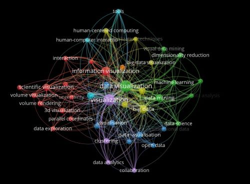

Projects
Discover some my select projects to illustrate my data analysis and visualization skills.
View ProjectsSample Papers
Review some of my papers I did in graduate school on topics including grant writing, metadata schema cookbooks, and sustainability analysis.
Browse Sample PapersGIS Maps

GIS is something I have come to really enjoy. Here are few sample maps I have made.
Explore Maps